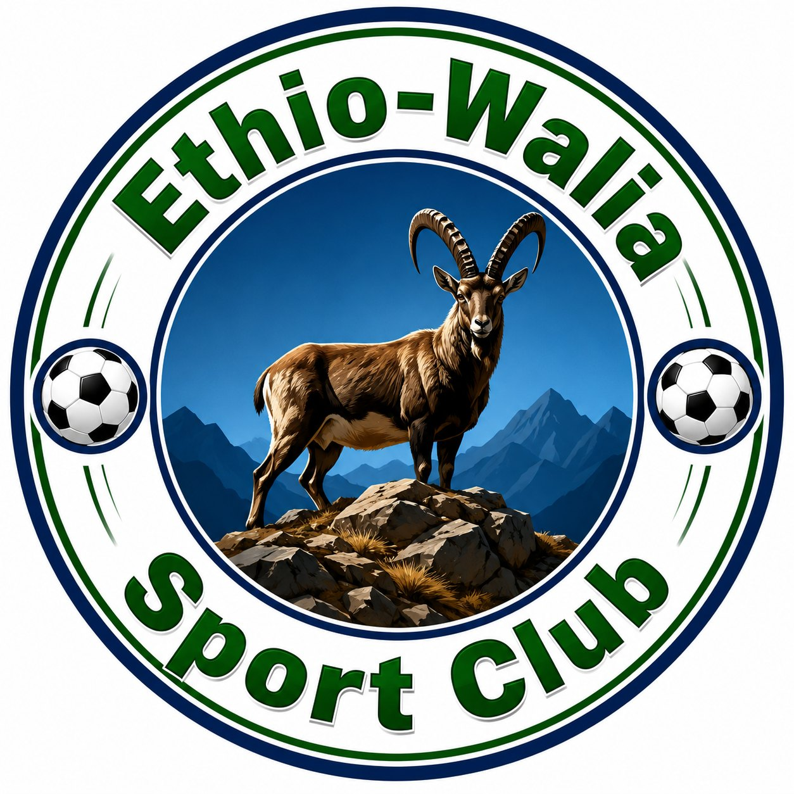

Edit files in the data folder. When opening this site directly from your computer, select your edited JSON files here to apply them. Changes stay in this browser. On a web server, JSON files load automatically.